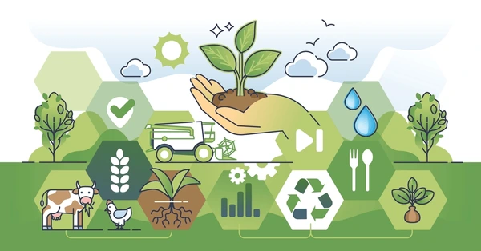
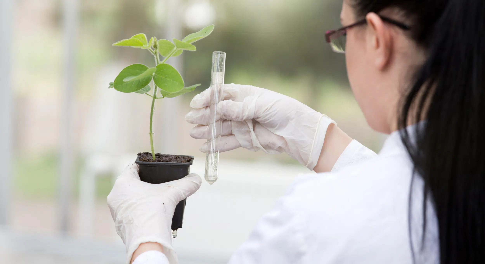

Resources
Access guides, crop schedules, and tools to enhance your farming practices.
Our Programs
Explore our programs, including grants, training sesssions, and sustainable farming iniatives.
Farmers' Support Program
Assisting farmers with grants and resources.
Food Security Initiative
Ensuring access to nutritious and affordable food.

Research and Development
Promoting innovation in agriculture through research.
